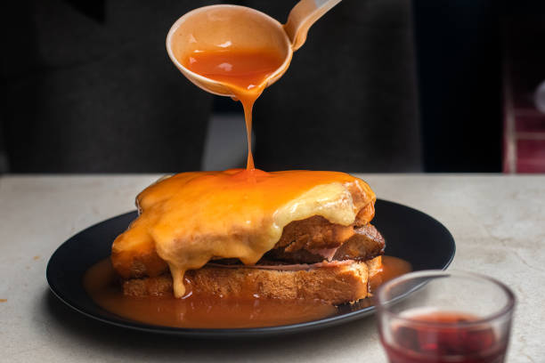

Description
Francesinha é uma sanduíche originária da cidade do Porto, em Portugal. A francesinha na sua variação sanduíche francesinha especial é constituída mais habitualmente por linguiça, salsicha fresca, fiambre, carnes frias e bife de carne de vaca, coberta com queijo posteriormente derretido. É guarnecida com um molho à base de tomate, cerveja e piri-piri e pode ser servida com batata frita como acompanhamento. A adição de um ovo estrelado no topo da sanduíche é um facto cada vez mais recorrente, sendo que esta prática constitui uma alteração à receita original. Em algumas casas, a francesinha dita normal serve-se sem bife.
It's not an everyday dish, but it's worth trying at least once in your life. If you visit Porto, make sure to try a francesinha.
Ingredients
For the sauce:
- olive oil as needed
- 1 sliced onion
- 2 garlic cloves
- 1 bay leaf
- 1 slice of ham
- 1 can of diced tomatoes
- 1/2 liter of beer
- 1/2 liter of white wine
- 1/2 liter of water
- 1 beef bouillon cube
- salt as needed
- Worcestershire sauce as needed
- 1 tsp of cornstarch
- 1/4 cup of milk
For the sandwich:
- 4 beef tenderloin steaks
- 4 fresh sausages
- 4 linguica sausages
- 8 slices of curstless sandwich bread
- 16 slices of cheese
- 8 slices of ham
Method
- In olive oil, sauté the onion. As soon as it is translucent, add the garlic.
- Let it sauté for a litte while, then add the bay leaf, ham, and tomato.
- Mix well and add beer, wine, and water.
- Season with bouillon stock, salt and Worcestershire sauce and let it simmer on low heat for about half an hour.
- Remove the bay leaf and puree the sauce until it becomes very smooth.
- Dissolve the cornstarch in the milk and add it to the sauce, stirring and letting it cook for a little while.
- Preheat the oven to 180 C.
- Meanwhile, grill the steaks, previously seasoned with salt and pepper, sausages, and linguica, cut in half lengthwise.
- In an oven tray, place 4 slices of sandwich bread, and on top of it, place the steak, sausages, and ham. Cover with another slice of sandwich bread. Cover with 4 slices of cheese. Place the tray in the oven until the cheese is melted.
- Remove from the oven, place each francesinha on a plate, and pour the hot sauce over it.